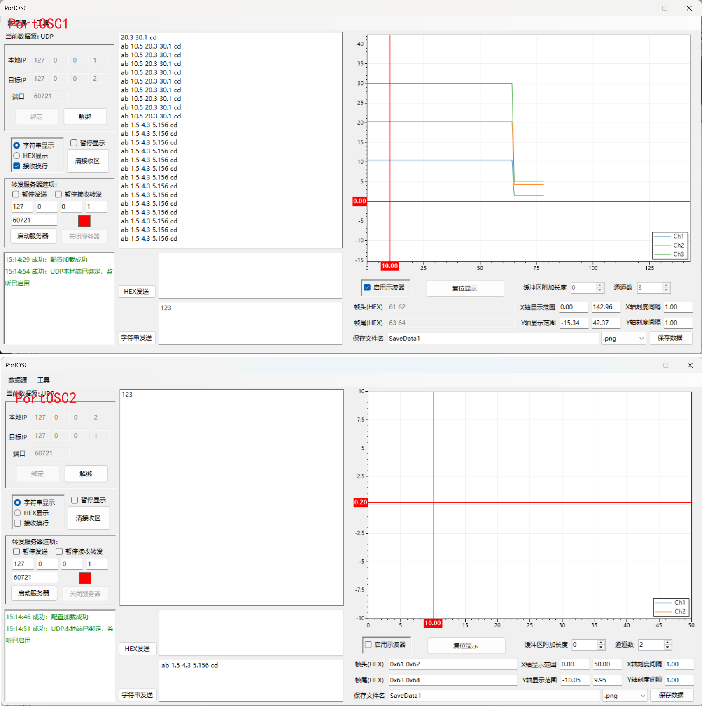
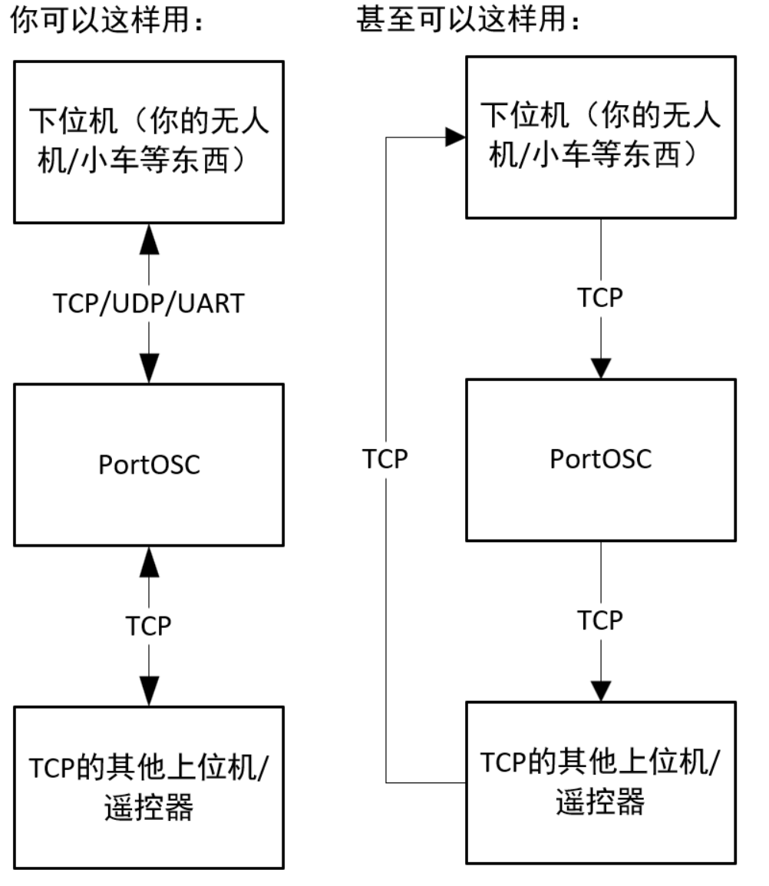

1. 介绍
PortOSC 是一个windows风格的简单串口示波器，也可以直接作为串口助手来用，支持串口、TCP、UDP协议。基于.NET8开发，开发软件是Visual Studio 2026。(不会整UI，直接用的winforms当然是windows风格了)
2. 如何使用示波器
最核心的功能就是这个串口示波器了。这里讲解一下如何使用。
2.1 使用说明
想要数据能够绘制成曲线，必须要使用正确的数据帧格式。 数据帧的基本格式为：<帧头><空格><通道1数据><空格>...<通道n数据><空格><帧尾>，且需要正确设置16进制帧头帧尾，以及通道数量和缓冲区附加长度。
举个例子：假设有一个四旋翼无人机，我需要在曲线上显示它三个姿态角的数据。 首先根据自己的喜好来定义帧头帧尾，长度大小都随意，每个字符在0x00-0xff间就行。我这里定义帧头为"0x61 0x62"(ab),帧尾为"0x63 0x64"(cd)。
正确设置示波器参数，确保串口或者网络正确连接并打开端口，勾选“启用示波器”复选框。 假设在某个时刻，无人机的姿态角数据信息为：roll=10.5°、pitch=20.3°、yaw=30.1°。 因此我需要在无人机端发送这样一条字符串信息："ab 10.5 20.3 30.1 cd",就能在示波器上看到三个通道的数据点。多发送几个数据，就可以得到一条曲线了。一直发送数据，就可以一直更新曲线。 为方便起见，这里使用两个示波器进行演示。

可以看到，我测试时手动发送了两个数据帧，绘制成了一条曲线。对接收的数据帧要求不严格，只要帧头帧尾是对的，通道数设错了也能用，就是少一条曲线。 小数点位数可以任意，可以中途发生改变，就像演示里面用了一位小数和三位小数混合都行，可以正确读到。
2.2 特性
首先是数据的输入格式问题。帧头帧尾文本框中输入的是16进制数，可以加0x,也可以不加，就像演示里面那样，上下两种写法都是对的 帧头帧尾输入时中间使用空格进行分隔，但是注意：实际的字符串是没有空格的! 也就是说，你在单片机的printf函数中要这么写：printf("ab %f.2 %f.2 %f.2 cd",&roll,&pitch,&yaw); 而不是：printf("a b %f.2 %f.2 %f.2 c d",&roll,&pitch,&yaw);
其次是示波器曲线界面的使用，可以使用下面的文本框更改坐标轴，也可以直接用滚轮在曲线上面缩放或这按住左键拖动，右键可以打开一个菜单，里面也有帮助。
关于保存数据功能，scottplot只提供了保存为图片的功能，我提供了将数据保存为.csv的功能，在保存数据那里的下拉框选择就行了。保存在软件根目录下的SaveData文件夹里面。
最后是这个缓冲区长度究竟是个什么东西。它与读取数据的实现方式有关系。通常设置成0就行。 但是在数据帧过长或是发送不连续等情况导致windows在中间把数据帧掐断了几次，或是示波器的数据帧之间需要插入其他的帧，导致读取数据帧失败了的时候，就可以把它设长一点。 一般使用不影响，设置成多少都无所谓，反正占内存也占不了几MB。 （注意插入其他数据帧的时候在插入到数据帧最后要加个空格，保证帧头字符串的独立性。是的，你甚至可以这样做：假设数据流为"... ab 1.2 3.4 cd qw 2.4 3.4 er ab 2.2 3.5 cd ...", 用示波器数据帧"ab ... cd"画曲线，同时用另一个数据帧"qw ... er"控制你的小车）
3. 转发服务器
这是一个特殊的功能，主要是为了满足一些特殊需求，比如说单片机只能发送串口数据，但是我又想在电脑上通过TCP协议的其他东西来接收这些数据， 或者说我想把串口数据转发到网络上去给其他设备使用。具体想怎么用都行，看个人理解（大概率没什么用）。画一个简单的示意图。

4. 配置保存
具有自动保存配置功能，在程序退出时会自动保存当前的配置到本地文件中，下次启动程序时会自动加载上次关闭的配置，避免每次选串口输IP选半天。没有保存到C盘！就在软件根目录下面的.json文件。
也能手动保存和读取配置文件，在工具栏那里
5. 杂项
左边那一坨用法类似于普通的串口助手，怎么打开端口连接下位机发数据一眼就能看明白，输错了也会报错的，不再赘述。
自带一个简单的HEX-CHAR工具，在工具栏里面，打开后会弹出一个窗口，在相应文本框输入数据后，点击文本框外的任意位置离开焦点即可转换单个字符
接收换行功能比较少见，就是在接收到一串数据后在末尾自动换行显示，方便查看数据流。依赖于windows的自动断帧，所以可能会出现预期之外的换行，大部分时候都还是挺好用的。